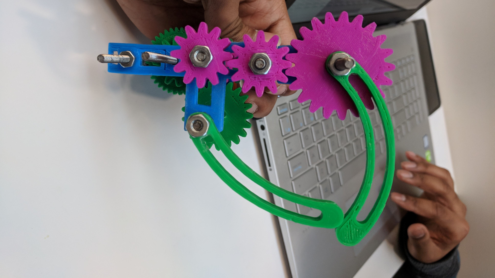
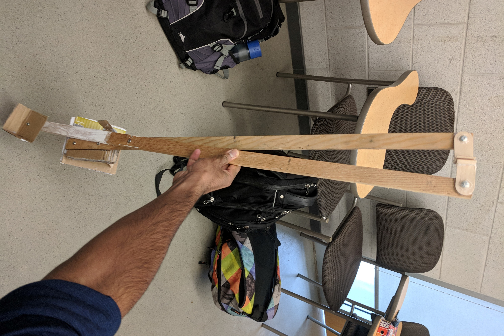

Bio
Web developer. Programming fanatic. I love to learn new languages and build new creative applications/programs. Computers are my biggest passion. My Resumé
My Contact: drchudasama26@gmail.com

Web developer. Programming fanatic. I love to learn new languages and build new creative applications/programs. Computers are my biggest passion. My Resumé
My Contact: drchudasama26@gmail.com
In second year I plan to specialize in computer engineering. I am looking for a solid background in both software and hardware. Some of my course work for the year:
We were tasked with designing a prosthetic hand. Some components to the project were:
The final product is visible in the pictures. Our final grade for the group portion was 96%.
To increase activity inside and outside club meetings I designed an interactive website. This featured some of the following:
As the head of IT for EFAN, I was tasked with desiging a professional website. The site was meant to showcase upcoming events and describe EFAN's purpose. Built in HMTL, CSS, JQUERY
In our Professional Engineering course we had to design a device that would allow our client to pick clothing from their closet in groups of 4. The client had cerebral palsy, which meant they had limited range of motion, lifting clothes was next to impossible for them. So we came up with a clampable arm that would sit on their wheelchair's arm rest. It has a 'pincer' like claw on its end to grasp clothing and is strong enought to support heavy jackets etc,. An intial prototype can be seen below:
